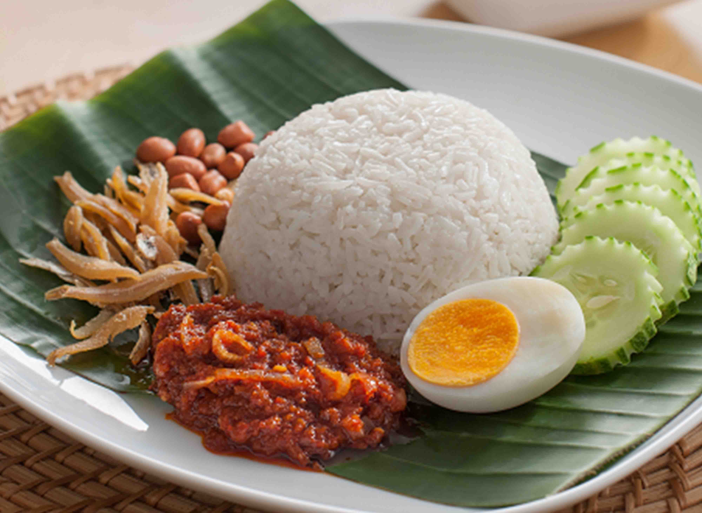

Malaysian Street Food Recipes
Discover the rich variety of street food across different cultures in Malaysia
Malay Cuisine
-
Nasi Lemak
Fragrant rice cooked in coconut milk and pandan leaf, served with sambal, fried anchovies, roasted peanuts, boiled egg, and cucumber.
-
Rendang

Slow-cooked dry curry deeply spiced and simmered with coconut milk and spices until the liquids evaporate and the meat becomes tender.
-
Satay

Skewered and grilled meat served with peanut sauce, ketupat (rice cakes), and a side of onions and cucumbers.
-
Laksa

Spicy noodle soup with a rich, coconut-based curry broth, fish, and aromatic herbs.
-
Nasi Kerabu

Blue-colored rice served with fried chicken, crackers, pickles, and salted egg, originating from Kelantan.
-
Ikan Bakar

Grilled fish marinated in a spicy sauce wrapped in banana leaves, giving it a distinctive smoky flavor.
Chinese Cuisine
-
Hainanese Chicken Rice

Poached chicken served with fragrant rice cooked in chicken broth, accompanied by chili sauce and cucumber garnish.
-
Char Kway Teow

Stir-fried rice noodles with shrimp, bloody clams, Chinese sausage, eggs, and bean sprouts in a savory soy sauce.
-
Bak Kut Teh

Pork rib soup simmered for hours with herbs and spices like garlic, star anise, and cinnamon.
-
Wantan Mee

Egg noodles served with char siu (barbecued pork) and dumplings, either in soup or dry with sauce.
-
Pan Mee
Hand-torn noodle soup served with minced meat, fried anchovies, and wood ear mushrooms.
-
Yong Tau Foo

Various vegetables and tofu stuffed with fish paste, served in broth or with gravy.
-
Hokkien Mee

Stir-fried thick yellow noodles in dark soy sauce with pork, squid, and cabbage.
Indian Cuisine
-
Roti Canai

Flaky, flatbread served with dhal (lentil curry) or other types of curry, often eaten for breakfast.
-
Teh Tarik
"Pulled tea" made from black tea and condensed milk, poured back and forth between containers to create a frothy top.
-
Banana Leaf Rice
Rice served on a banana leaf with an array of vegetables, pickles, and curries of your choice.
-
Murtabak

Stuffed pancake filled with minced meat, eggs, and onions, served with curry sauce.
-
Mee Goreng Mamak

Spicy fried noodles with tofu, potatoes, and eggs, prepared by Indian Muslim chefs.
-
Rojak Mamak
Indian-style fruit and vegetable salad with a sweet and spicy peanut sauce.
-
Thosai
Fermented crepe made from rice and lentil batter, served with sambar and chutney.
Baba-Nyonya Cuisine
-
Nyonya Laksa

Spicy noodle soup with a coconut-based broth, infused with lemongrass, galangal, and chili.
-
Asam Laksa

Tangy, fish-based noodle soup with tamarind, mackerel, and aromatic herbs like mint and ginger flower.
-
Ayam Pongteh
Chicken stew cooked with fermented soybean paste, potatoes, and mushrooms.
-
Nyonya Kuih
Colorful bite-sized snacks or desserts made from rice flour, coconut milk, and palm sugar.
-
Otak Otak

Spicy fish cake grilled in banana leaves, with a mixture of fish paste, spices, and coconut milk.
Orang Asli, Sabah & Sarawak Natives
-
Hinava
Traditional Kadazandusun dish of raw fish cured in lime juice with chili, ginger, and onions.
-
Linopot
Rice wrapped in leaves, often mixed with yam or sweet potato, traditionally eaten by the Dusun people.
-
Umai

Melanau dish of thinly sliced raw fish marinated in lime juice, onions, and chili.
-
Pansoh

Iban method of cooking chicken or fish in bamboo with lemongrass and tapioca leaves.
-
Sago Worms

Traditional delicacy from East Malaysia, often eaten raw or fried, with a creamy texture.
Suggest Local Foods
Suggest a street food that we should to include on our website.